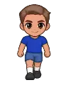

Wiki › Itens › Equipamentos › Camisa Mundial

Camisa Mundial
Equipamento · Camisa Nível 55 Incomum
- Tipo
- Equipamento · Camisa
- Nível
- 55
- Raridade
- Incomum
- Atributos
- 🛡 Defesa 16
❤ Fôlego +113
🌀 Drible +2 - Preço na loja
- 🪙 24.000
- A loja paga
- 🪙 5.500
De onde vem
Quem deixa cair (3)
| Adversário | Nível | QuantidadeQtd. | Chance | Onde |
|---|---|---|---|---|
| O Sensei do Drible Chefão | 84 | 1 | 40% | Tóquio |
| 80 | 1 | 0,40% | Tóquio | |
 Ninja da Linha de Fundo | 80 | 1 | 0,30% | Tóquio |
Onde comprar
 Seu Karim do Mercado — Cairo — Às margens do Nilo 🪙 24.000
Seu Karim do Mercado — Cairo — Às margens do Nilo 🪙 24.000 Dona Yuki do Onigiri — Tóquio — Distrito Neon 🪙 24.000
Dona Yuki do Onigiri — Tóquio — Distrito Neon 🪙 24.000 Seu Rashid das Tâmaras — Doha — Cidade das Dunas 🪙 24.000
Seu Rashid das Tâmaras — Doha — Cidade das Dunas 🪙 24.000 Tio Joe do Food Truck — Miami — Ocean Drive 🪙 24.000
Tio Joe do Food Truck — Miami — Ocean Drive 🪙 24.000
Prêmio das missões
- A muralha local (Nível 77)